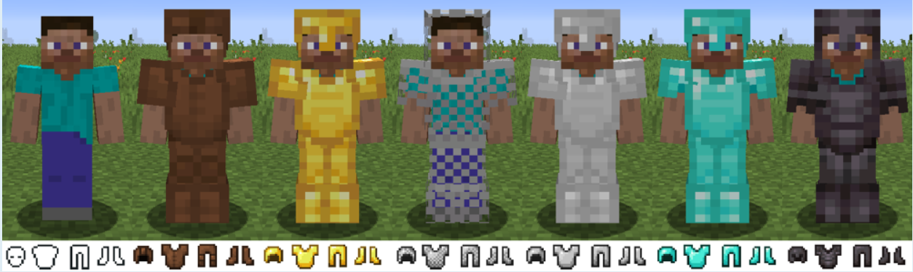
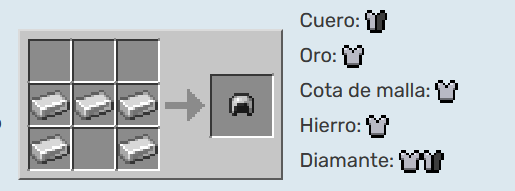
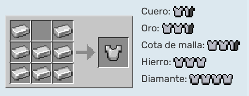
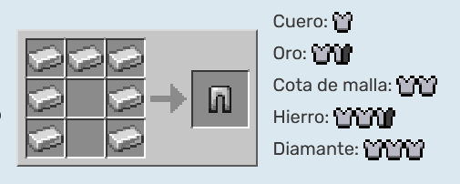
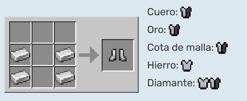

¡Manual definitivo para principiantes en Minecraft!
Que es una armadura?
Es una categoría de objetos que proporcionan a los jugadores y a ciertas criaturas diferentes niveles de protección
contra los tipos de daño comunes, y aparecen gráficamente en el portador. Estos objetos incluyen varios niveles diferentes
de cascos, petos, grebas y botas, que se pueden colocar en las ranuras de armadura designadas del inventario del jugador
para su uso.
Tipos de armadura

Cuero
Oro
Hierro
Diamante
Netherita
Cota de Mallas
Caparazón de Totuga
Fabricación
Se necesitan 24 unidades de material para crear un set completo de la armadura. La de cota de mallas no puede fabricarse.




Encantamientos
La armadura se puede encantar con varios tipos de hechizos distintos. Los encantamientos pueden dar más protección
o hacer que protejan ciertos tipos de daños que generalmente no protegerían, como daño de caída o el fuego. La reducción
de daño de los encantamientos no disminuye la durabilidad de la armadura. Los encantamientos de armadura no aparecen en
la barra de armadura. Cada encantamiento de protección protege contra tipos específicos de daño. La cantidad de
reducción de daño depende del Factor de protección de encantamiento (EPF) proporcionado por ese encantamiento